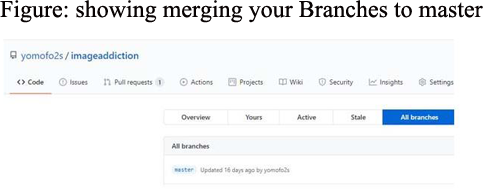

How to use Git to implement a new feature/change without affecting master branch
A Git branch is the fundamental means of launching a separate line of development withing a software project. It allows development to continue in multiple directions simultaneously and potentially, to produce different versions of the project. The default branch in a repository is named master and most developers keep the repository’s most robust and dependable line of development on that branch
What to know as a beginner?
The git branch model is highly suitable for your day-day versionining as a developer.
When should you use a branch?
$ git branch
A Branch is suitable for continuing development. It is dynamic and moves with each commit you make.
- A branch can be used to represents an individual customer release. If you want to start version 1.1 of your project but you know that some of your customers want to stick with version 1.0, then keep the old version alive as a separate branch
- A branch can encapsulate a development phase, such as the prototype, beta, stable or bleeding-edge release.
- You can use branch to isolate the development of a single feature or research into a particularly complex bug. For example, you can introduce a branch for a well-defined and conceptually isolated task or to facilitate a merge of several branches prior to a release
How should you name your branches?
$ git checkout -b new-feature
Naming your branches is practically up to you and your project policies. I say it is essentially arbitrary, though there are some limitations. However, you should consider the key differentiating characteristic: will the naming convention be static and immutable? or will the naming convention be dynamic for development?
An example of new-feature is shown below in Figure 1
Merging your git branches?
$ git merge -b new-feature
Merging your depends whether you are ready to merge your project with the master branch. remember the terms merging
- With the few figures shown image, it is best to create new branch before you develop a new feature
- Merging directly to the master branch should be restricted.
- Merging to local master branch should be synced only from upstream to local.
- Pushing to origin master branch should be sync only, from local to origin.
- Keep rebasing (making sure you sync between upstream master branch onto your branch) master branch onto feature branch periodically
Things to keep in mind
To see the more Git commands Essential git-commands for beginners
To find out more about git command for Git Cheat git-cheat-sheet